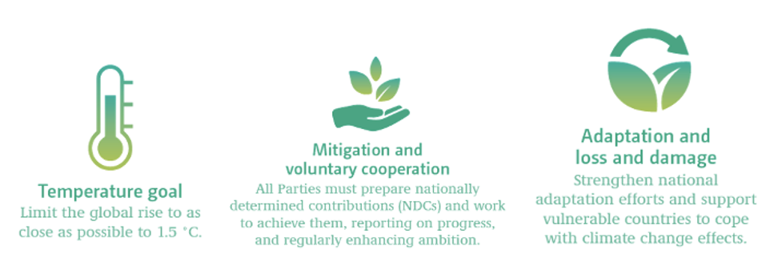
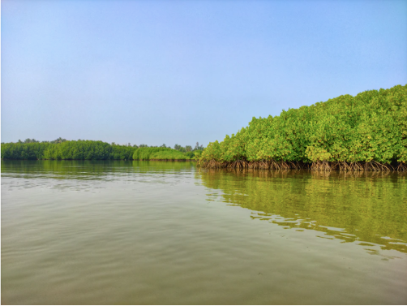
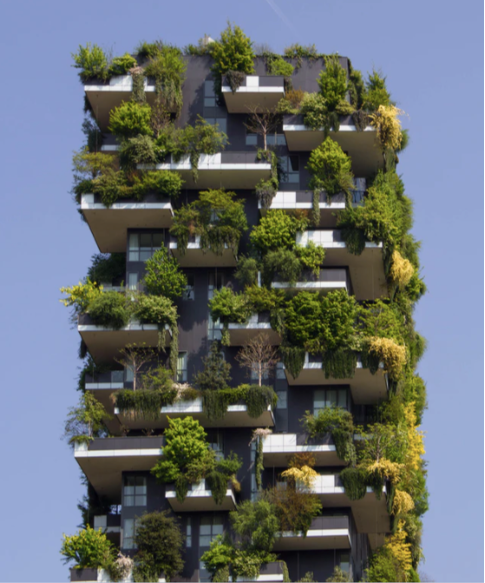
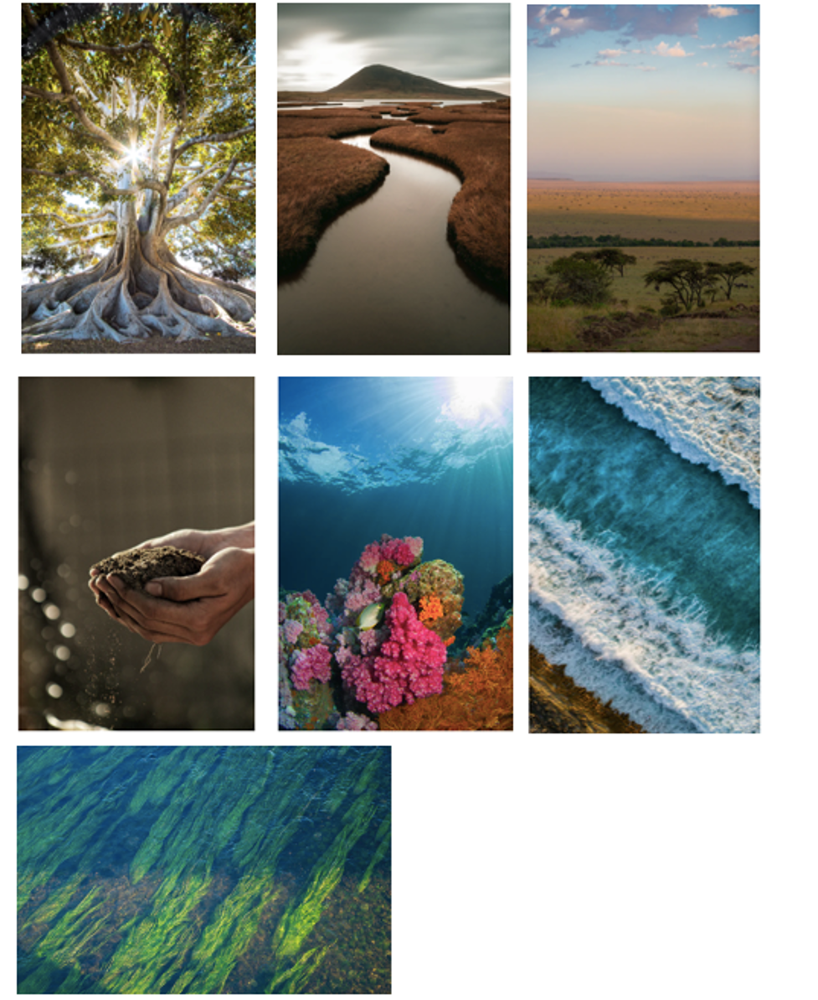

This mini-lecture provides an overview of the potential for nature-based solutions (NbS) to enhance progress on the Paris Agreement through supporting climate outcomes. It will consider the potential for infrastructure practitioners to leverage nature in order to contribute to climate and development goals, which will be explored in subsequent lectures.
As introduced in mini-lecture 1.2, the Paris Agreement is a global climate change agenda, with the objective to keep global temperature rise below 2°C above preindustrial levels by 2100, and to pursue efforts to limit global temperature rise to the more stringent goal of 1.5°C (UNFCCC 2015). The Paris Agreement includes actions spanning both climate mitigation and adaptation, recognising that while mitigation is necessary to limit global temperature increase, some climate impacts are unavoidable.

Figure 15.3.1: Key objectives of the Paris Agreement on Climate Change of relevance to nature-based solutions (United Nations 2017)
The Paris Agreement explicitly refers to ecosystems and their significance for both climate mitigation and adaptation. For example, the preamble acknowledges “the importance of ensuring the integrity of all ecosystems, including oceans, and the protection of biodiversity.” The Agreement makes further references relevant to NbS throughout several articles (see Table 15.3.1). This follows UNFCCC Article 4.1(d): to “promote sustainable management, (…) conservation and enhancement, as appropriate, of sinks (…), including biomass, forests and oceans as well as other terrestrial, coastal and marine ecosystems” (UNFCCC 1992).
Through leveraging ecosystems and their services, NbS have a key role in enhancing progress on the Paris Agreement. As countries revise or prepare new Nationally Determined Contributions (NDCs) in support of the Paris Agreement, there is a major opportunity to increase global ambition on climate change through strengthening the contribution of NbS in mitigation and adaptation commitments.
Mitigation: Globally, ecosystems capture and store significant amounts of carbon, and thereby can contribute to progress to limiting global temperature increase (IPCC 2019)
Adaptation: A growing research base has provided evidence on the potential for NbS to protect vulnerable communities and infrastructure from climate impacts [see Lecture 16].
Table 15.3.1: Examples of relevant Paris Agreement Articles (Seddon et al. 2019 – see p.4 for full list)
| Article | Specific quote/reference |
|---|---|
| 4.7 | Mitigation co-benefits resulting from Parties’ adaptation actions and/or economic diversification plans can contribute to mitigation outcomes under this Article |
| 4.13 | Parties shall account for their Nationally Determined Contributions (NDCs). In accounting for anthropogenic emissions and removals corresponding to their NDCs, Parties shall promote environmental integrity, transparency, accuracy, completeness, comparability and consistency, and ensure the avoidance of double counting, in accordance with guidance adopted by the Conference of the Parties (COP) serving as the meeting of the Parties to this Agreement |
| 5.1 | Parties should take action to conserve and enhance, as appropriate, sinks and reservoirs of greenhouse gases as referred to in Article 4, paragraph 1(d), of the Convention, including forests |
| 6.1 | Parties recognise that some Parties choose to pursue voluntary cooperation in the implementation of their NDCs to allow for higher ambition in their mitigation and adaptation actions and to promote sustainable development and environmental integrity |
| 7.2 | Parties recognise that adaptation is a global challenge faced by all with local, subnational, national, regional and international dimensions, and that it is a key component of and makes a contribution to the long-term global response to climate change to protect people, livelihoods and ecosystems, taking into account the urgent and immediate needs of those developing country Parties that are particularly vulnerable to the adverse effects of climate change |
| 8.4 | Accordingly, areas of cooperation and facilitation to enhance understanding, action and support may include: Resilience of communities, livelihoods and ecosystems. |
The Paris Agreement requires each signatory nation to define their individual commitments in terms of mitigation reductions in the form of Nationally Determined Contributions (NDCs) (UNFCCC 2021).
To date, most NDCs have included reference to NbS, and approximately two-thirds (66%) of the signatories of the Paris Agreement have specified NbS to contribute towards achieving their national mitigation and/or adaptation objectives (Seddon et al. 2019). 70 countries have included actions broadly aligned with Ecosystem-based Adaptation (EbA), and a further 33 countries refer to conservation actions in the context of adaptation.
NDC commitments which include reference to nature or NbS are more prevalent amongst developing or low-income countries (as defined by the World Bank), compared to high-income countries. For example, a recent report (Seddon et al. 2019) highlights that all low-income countries refer to NbS in the adaptation component of the NDC, compared to only 27% of high-income nations. Where NbS are included in NDCs, the report finds a general lack of robust, evidence-based targets. For example, only 17% of NDCs with current or planned actions involving NbS for adaptation set quantifiable, robust targets. Equally, while more than 70% of NDCs contain references to forest-based actions, only 20% include quantified targets and only 8% include targets in tonnes of CO2eq (carbon dioxide equivalent).
The focus on forests (as explained in mini-lecture 15.1) extends to NDCs, and non-forest ecosystems such as grasslands, wetlands, soils and marine ecosystems (e.g. mangroves, reefs) are under-represented. For example, only 19% of countries with coastal ecosystems refer to them for mitigation in their NDC (Seddon et al. 2019).
NbS have potential to contribute to both climate mitigation and adaptation objectives simultaneously, and at relatively low-cost, while delivering multiple additional benefits for people and nature (Seddon et al. 2020).
However, within current NDCs, there is a lack of synergy between NbS commitments for adaptation and NbS commitments for mitigation, with references to NbS largely siloed (UNFCCC 2021). For example, only 17 countries aim to address adaptation and mitigation together or have sections in the adaptation components of their NDCs which explicitly highlight mitigation benefits of nature-based adaptation options (Seddon et al. 2019).
As such, there is a need for integrated NbS action, which simultaneously delivers both adaptation and mitigation benefits, as well as supports progress for positive impacts on sustainable development and biodiversity.
For example, the protection, restoration and sustainable management of peatlands, wetlands, rangelands, mangroves and intact forest ecosystems are critical for mitigation goals, due to their ability to sequester and store significant amounts of carbon (Griscom et al. 2017). At the same time, if implemented with consideration, these ecosystems can contribute to adaptation goals through the delivery of services including flood mitigation, wave dissipation, soil stabilisation, and through services such as food and water provisioning, which can increase the resilience of communities and biodiversity in the face of climate change (Kapos et al. 2019).
Similarly, the loss of natural ecosystems will further exacerbate climate change and the severity of climate impacts. For example, it is estimated that deforestation and forest degradation release approximately 4.4 GtCO2/yr (Gigatonnes of carbon dioxide per year), approximately 12% of anthropogenic emissions, while deforested landscapes increase the risk of landslides, flooding and nutrient depletion (IPCC 2019).

Figure 15.3.2: Protecting and restoring ecosystems along coastlines or in upper catchments can contribute to adaptation by protecting communities and infrastructure from coastal hazards, such as flooding, erosion or storm surges, while simultaneously sequestering carbon and protecting biodiversity (see mini-lecture 16.2). Photograph from Unsplash (Photographer: Vishwasa Navada K).

Figure 15.3.3: Investing in NbS in urban landscapes, such as through green roofs, green balconies and green spaces, can contribute to climate adaptation through services including air quality regulation and reduction of the urban heat island effect, whilst sequestering carbon and providing benefits for mental health and well-being (see mini-lecture 16.4). Photograph from Unsplash (Photographer: Victor Garcia).
Well-designed NbS, which are implemented with consideration of the local socio-economic and ecological context (see Lecture 18) and which incorporate diverse, native species, have the potential to enhance progress on mitigation and adaptation goals whilst delivering wider co-benefits (Seddon et al. 2019).
All countries, and particularly high-income nations, have the opportunity to enhance their NDCs through incorporation and synergy of NbS across adaptation and mitigation components. However, in recognition of the principles of NbS (outlined in mini-lecture 15.1), commitments and actions on NbS should not detract ambition from actions to decarbonise across all sectors.
NbS commitments within NDCs should be informed by scientific and local indigenous knowledge, based on robust carbon estimates in the case of mitigation, and address specific climate vulnerabilities in the case of adaptation (Seddon et al. 2019).
There are various resources available to support countries in integrating NbS into NDCs. These include a report by the International Union for the Conservation of Nature (IUCN) (Seddon et al. 2019), which has identified key information that can be included in NDCs to help track ambition on nature more systematically. Furthermore, the ‘Nature-based Solutions for NDCs Toolkit’ and associated ‘Framework’ has identified more than 100 tools and resources on NbS that can support decision-makers in enhancing their NDCs, including spatial datasets, guidance documents and other toolkits (UNDP 2019b, 2019a).
Most NDCs that have included NbS, have highlighted the need for external financing and support. Therefore, in leveraging NbS to enhance progress on the Paris Agreement, there remains an urgent need for supportive enabling conditions, including new financial and policy support (Seddon et al. 2019).
Infrastructure is responsible for 87% of greenhouse gas (GHG) emissions globally (Thacker et al. 2019). Furthermore, climate impacts pose a high risk to infrastructure systems, threatening service provision and development gains (IPCC 2018; Hallegatte, Rentschler, and Rozenberg 2019). Infrastructure decisions are therefore a key determinant of progress on global efforts on climate mitigation, adaptation and development.
Decisions on infrastructure can be taken on different parts of the infrastructure system: (1) enabling environment (e.g. policies); (2) built environment (e.g. engineered assets); and (3) natural environment (e.g. NbS).
While traditional infrastructure approaches have focused on the built environment, leveraging NbS can enhance the resilience of infrastructure systems whilst advancing progress on development and climate agendas including the Paris Agreement (Seddon et al. 2020).
Globally, ecosystems can sequester large amounts of carbon dioxide (Anderson et al. 2019; IPCC 2019). The IPCC Climate Change and Land Report found that all scenarios consistent with the Paris Agreement’s 1.5°C temperature goal rely on land use mitigation strategies in addition to decarbonisation (IPCC 2019). Equally, a widely cited study suggests NbS could provide one-third of cost-effective mitigation needed by 2030 to stabilise warming below 2°C (Griscom et al. 2017).
While there are some caveats to the ability of NbS to contribute to mitigation goals (e.g. concerns around saturation, resilience of ecosystems to climate change, longevity in the face of socio-political change, existing land appropriation for other uses), NbS provide a critical opportunity to support progress on the Paris Agreement through avoided emissions from land use change, and through sequestering carbon dioxide, if integrated into development decisions. The subsequent mini-lectures will consider how development practitioners can integrate NbS into infrastructure systems, in order to deliver on global development agendas such as the Paris Agreement and SDGs.

Figure 15.3.4: Different types of ecosystems can provide carbon sequestration and protective services, and thus contribute to addressing the causes and consequences of climate change. These include (but are not limited to) forests, wetlands, savannas, soils, coral and oyster reefs and seagrass. Photographs from Unsplash.
Through carbon sequestration and adaptation services, ecosystems can contribute to addressing the causes and consequences of climate change. As such, Nationally Determined Contributions (NDCs) can leverage nature-based solutions (NbS) in order to progress on the goals of the Paris Agreement. While many NDCs already refer to natural ecosystems to some extent, there are opportunities to enhance ambition, including through increasing the prominence and robustness of NbS in NDCs, and synergising NbS-related adaptation and mitigation commitments. Development decision-makers can also integrate NBS into infrastructure systems to support progress on climate goals. Opportunities for integrating NbS into built infrastructure systems will be explored in subsequent lectures.